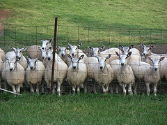
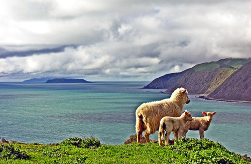
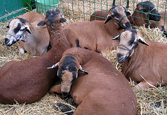

Kinds of Sheep » Counting Sheep
Counting sheep


- 


- 
- 


Sheep breeds
There are more breeds of sheep than breeds of any other livestock species. Worldwide, there are more than one thousand distinct sheep breeds. There are more than 40 breeds in the United States. Sheep come in all different sizes, shapes, and colors.
There are several different ways to classify sheep breeds: according to their primary purpose (meat, milk, or wool), the type of fibers they grow (fine, medium, long or carpet wool; or hair), the color of their faces (black, white, red, or moddled), and/or by specific physical or production characteristics.
Fine wool sheep
Fine wool sheep produce wool fibers with a very small fiber diameter, usually 20 microns or less. Fine wool sheep account for more than 50 percent of the world's sheep population. Found throughout Australia,, South Africa, South America, and the Western United States, most sheep of this type belong to the Merino breed or its derivatives.
The Rambouillet, related to the Merino, is the most common breed of sheep in the U.S., especially the western states where the majority of sheep in the U.S. can still be found. Fine wool sheep are best adapted to arid and semi-arid regions. They are known for their longevity and strong flocking instinct.
Long wool sheep
Long wool sheep produce long-stapled wool with a large fiber diameter, usually greater than 30 microns. Long wool sheep are best adapted to cool, high rainfall areas with abundant forage. They are commonly raised in England, Scotland, New Zealand, and the Falkland Islands. In the U.S., the fleeces from the long wool breeds are popular among handspinners.
Medium wool meat sheep
Meat or "mutton-type" sheep produce wool, mostly medium (or long), but are raised more for their meat qualities. Medium wool sheep account for about 15 percent of the world's sheep population. The most popular meat breeds in the U.S. are Suffolk, Dorset, and Hampshire.
Carpet wool sheep
The coarest, lowest grade wool (usually over 38 microns) is used in the manufacture of carpets. Carpet wool breeds are usually double-coated, with a coarse long outer coat for protection against the elements. They are generally adapted to extreme environments. Carpet wool breeds found in the U.S. include Icelandic, Karakul, Navajo Churro, and Scottish Blackface.
Hair Sheep
Some breeds lack wool and are covered with hair instead, like their wild ancestors. Some hair sheep have pure hair coats, whereas others have coats that contain a mixture of hair and wool fibers that shed naturally. Hair sheep are found mostly in Africa and the Caribbean, but are also raised in temperate climates, such as the U.S. and Canada.
Hair sheep account for about 10 percent of the world's sheep population and are the fastest growing segment of the American sheep industry. Interest in hair sheep genetics is also developing in Australia, Europe, and the United Kingdom.
Fat-tailed sheep
Fat tailed or fat-rumped sheep are so-named because they can store large amounts of fat in the tail and region of the rump. Fat-tailed sheep are found mostly in the extremely arid regions of Africa, the Middle East, and Asia. They often produce wool, but are raised primarily for meat or milk production. Fat-tailed sheep comprise 25 percent of the world's sheep population. The only fat-tailed sheep raised in the U.S. is the Karakul.
Short or rat-tailed breeds
Short or rat-tailed breeds originate primarily from Scandinavia and Northern Europe. Their tails are thin and free of wool and do not need docked. These breeds tend to be very prolific. Examples of these breeds include Finn Sheep, Romanov, East Friesian, Shetland, Icelandic, and Soay.
Primitive breeds
Primitive breeds have developed with minimal human selection pressure. They typically possess lots of genetic variation between members, but share characteristics indicative of a breed. A primitive breed will typically retain survival characteristics that favor production with minimal human inputs.
Consistency among the products produced by the breed is somewhat lacking, but they are an important source of genetic variation that may not exist anywhere else. Many primitive breeds live in isolated mountain regions or on islands. Like some species of wildlife, many are endangered. Fortunately conservation efforts are underway to preserve these important genetic resources.
<== KINDS OF SHEEP